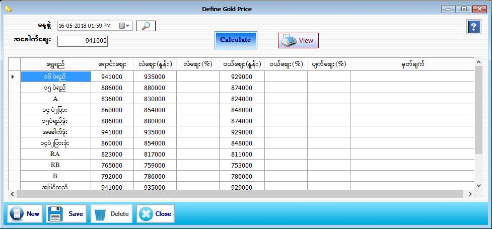

Define GoldPrice

- Master Setup အောက်မှ DefineGoldPrice အားနှိပ်ပါ။
- ပေါက်ဈေး ပြောင်းလဲသတ်မှတ်သော Form ဖြစ်ပါသည်။
- အခေါက်စျေးကို ရိုက်ထည့်ပြီး Calculate ကိုနှိပ်ပါ။
- ၁၆ပဲရည်စျေး(အခေါက်) ပြောင်းလဲသွားပါက အခေါက်စျေး text box တွင် ပြောင်းလဲသွားသောစျေးကို ချိန်းလိုက်ပါ။ ထို့နောက် calculate button ကိုနှိပ်လိုက်ပါက မိမိဆိုင်တွင်အသုံးပြုသောရွှေရည်များအားလုံးအတွက် ရောင်းစျေး ၊ ဝယ်စျေး၊ လဲစျေးနှုန်းများ ကို Gold Quality Form တွင် သတ်မှတ်ထားသော ပေါက်စျေးတွက်နည်းအတိုင်း software မှ Auto တွက်ပေးပြီး စျေးနှုန်းများ ကျလာမည် ဖြစ်သည်။
- * Define Gold Price Form သည် ရွှေဖြူ(White Gold) မပါ ရွှေ အတွက် သီးသန့် စျေးသတ်မှတ် သော Form ဖြစ်သည်။ *
- ရွှေရည်သတ်မှတ်ရာတွင် အခေါက်စျေးအဖြစ်ထားခဲ့သော ၁၆ ပဲရည်စျေးအပေါမူတည်ပြီး ၁၅ ပဲရည် ၁၄ ပဲ ၂ပြား အစရှိသည်ဖြင့် Gold Quality တွင်သတ်မှတ်ခဲ့သော ရွှေရည်အလိုက်စျေးများတွက်ချက်ပေးမည်။
- လဲစျေး(နှုန်း)ဝယ်စျေး(နှုန်း)ရှိ ခြားနားငွေသည် Global Setting တွင်သတ်မှတ်ထားသော ခြားနားငွေအလိုက်ခြားနားပေးမည်ဖြစ်သည်။
- Global Setting အောက်ရှိ Exactly Calculate Price Checkbox ကို ON ထားပါက ရွှေစျေးသည် အတိအကျ တွက်ချက်ပေးမည်ဖြစ်သည်။အတိအကျ မတွက်ချက်လိုပါက Exactly Calculate Price Checkbox ကို OFF ထားပါ။
- Eg:Exactly Calculate Price Checkbox (ON)=>အခေါက်စျေး (941000)၊ ၁၅ ပဲရည် (885647)
- Eg:Exactly Calculate Price Checkbox (OFF)=>အခေါက်စျေး (941000)၊ ၁၅ ပဲရည် (886000)
- ရွှေစျေးရှိ ရာဂဏန်းသည် (500) ထက်များနေပါက ၁၅ ပဲရည်စျေးသည် (886000)ဟု Auto ပေါင်းပေးမည်ဖြစ်သည်။
- ရွှေစျေးရှိ ရာဂဏန်းသည် (500)နှင့်(500) ထက်နည်းနေပါက ၁၅ ပဲရည်စျေးသည် (885000)ဟုသာ သတ်မှတ်သွားမည်ဖြစ်သည်။
- မိမိစိတ်ကြိုက် စျေးသတ်မှတ်ပြီးပါက Save Button ကို နှိပ်ပြီး သိမ်းဆည်းပေးပါ။ အသစ်ထပ်မံသတ်မှတ်လိုပါက New Button နှိပ်ပြီး အသစ်ထပ်မံသတ်မှတ်ပေးပါ။
- ၄င်းသတ်မှတ်ခဲ့သောရွှေစျေးများကို ပြန်လည်ကြည့်လိုပါက View ကိုနှိပ်ပါ။
- သတ်မှတ်ပြီးသော ရွှေစျေးများအား Delete လုပ်လိုပါက မိမိ Delete လုပ်လိုသော ရွှေစျေးနှင့်နေ့စွဲအလိုက်ရွေးပြီး Delete လုပ်နိုင်ပါသည်။